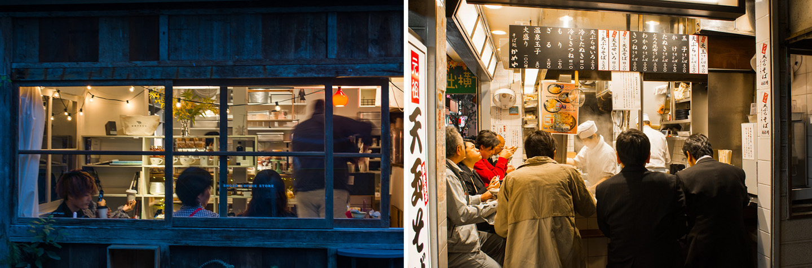

SMALL TOKYO
Urbanism of daily Routines, observed during my trips to Japan between 2017 and 2020
Morning Shine
stairwell, komorebi, bicycles, steps, trolley...
On the Move
signal light, beeping, screens, timetables, rings...
Eyes on the Straitness
signboards, wires, showcase, racks...
Minds in the Void
canopies, silhouettes, mist, flickering, umbrellas...
The Dawn of Unchained Souls
crowds, lanterns, noises, laughters, smoke...

The Way Home
crosswalk, platform, trains, say-ya-all-tomorrow...
Into the Darkness
sparkle, drip, a lonely convenience store...